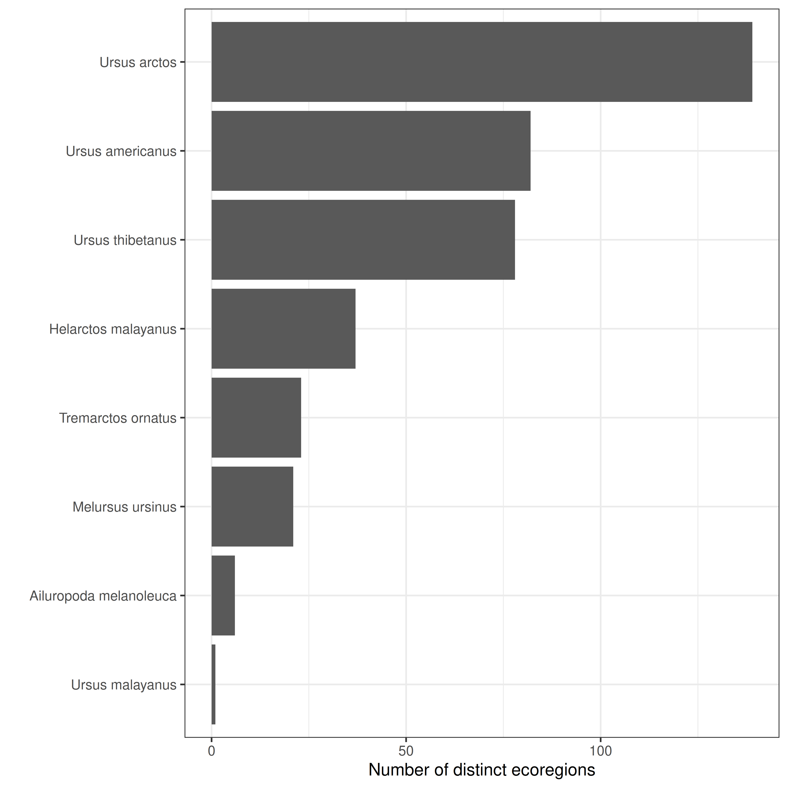

## Load project ----
devtools::load_all()World Ursidae analysis
Set up project
Data acquisition
## Download data ----
dl_wildfinder_data()Data importation
Mammals species list
## Import species list ----
sp_list <- read_sp_list(here::here("data", "wildfinder",
"wildfinder-mammals_list.csv"))| species_id | class | order | family | genus | species | common | sci_name |
|---|---|---|---|---|---|---|---|
| 15168 | Mammalia | Artiodactyla | Antilocapridae | Antilocapra | americana | Pronghorn | Antilocapra americana |
| 15290 | Mammalia | Artiodactyla | Bovidae | Addax | nasomaculatus | Addax | Addax nasomaculatus |
| 15169 | Mammalia | Artiodactyla | Bovidae | Aepyceros | melampus | Impala | Aepyceros melampus |
| 15170 | Mammalia | Artiodactyla | Bovidae | Alcelaphus | buselaphus | Hartebeest | Alcelaphus buselaphus |
| 15176 | Mammalia | Artiodactyla | Bovidae | Alcelaphus | lichtensteinii | Lichtenstein’s Hartebeest | Alcelaphus lichtensteinii |
| 15177 | Mammalia | Artiodactyla | Bovidae | Ammodorcas | clarkei | Dibatag | Ammodorcas clarkei |
Ecoregions list
## Import ecoregions list ----
eco_list <- read_eco_list(here::here("data", "wildfinder",
"wildfinder-ecoregions_list.csv"))| ecoregion_id | ecoregion | realm | biome |
|---|---|---|---|
| AA0106 | Halmahera rain forests | Australasia | Tropical and Subtropical Moist Broadleaf Forests |
| AA0107 | Huon Peninsula montane rain forests | Australasia | Tropical and Subtropical Moist Broadleaf Forests |
| AA0105 | Central Range montane rain forests | Australasia | Tropical and Subtropical Moist Broadleaf Forests |
| AA0102 | Banda Sea Islands moist deciduous forests | Australasia | Tropical and Subtropical Moist Broadleaf Forests |
| AA0103 | Biak-Numfoor rain forests | Australasia | Tropical and Subtropical Moist Broadleaf Forests |
| AA0104 | Buru rain forests | Australasia | Tropical and Subtropical Moist Broadleaf Forests |
Merging table
## Import merging table ----
sp_eco <- read_sp_eco(here::here("data", "wildfinder",
"wildfinder-ecoregions_species.csv"))| ecoregion_id | species_id |
|---|---|
| AT0101 | 17507 |
| AT0101 | 17688 |
| AT0101 | 17730 |
| AT0101 | 17736 |
| AT0101 | 17741 |
| AT0101 | 17789 |
Species selection
## Select species ----
sp_list <- select_species(sp_list, family = params$"mammals_family")| species_id | sci_name | family |
|---|---|---|
| 14932 | Ailuropoda melanoleuca | Ursidae |
| 14934 | Helarctos malayanus | Ursidae |
| 14935 | Melursus ursinus | Ursidae |
| 14936 | Tremarctos ornatus | Ursidae |
| 14937 | Ursus americanus | Ursidae |
| 14938 | Ursus arctos | Ursidae |
| 27926 | Ursus malayanus | Ursidae |
| 14940 | Ursus thibetanus | Ursidae |
Add ecoregions
## Add ecoregions to species list ----
sp_eco_list <- add_ecoregions(sp_list, sp_eco, eco_list)| sci_name | ecoregion |
|---|---|
| Ailuropoda melanoleuca | Hengduan Mountains subalpine conifer forests |
| Ailuropoda melanoleuca | Yunnan Plateau subtropical evergreen forests |
| Ailuropoda melanoleuca | Daba Mountains evergreen forests |
| Ailuropoda melanoleuca | Qin Ling Mountains deciduous forests |
| Ailuropoda melanoleuca | Qionglai-Minshan conifer forests |
| Ailuropoda melanoleuca | Southeast Tibet shrub and meadows |
| Helarctos malayanus | Cardamom Mountains rain forests |
| Helarctos malayanus | Irrawaddy moist deciduous forests |
| Helarctos malayanus | Kayah-Karen montane rain forests |
| Helarctos malayanus | Northern Thailand-Laos moist deciduous forests |
Count ecoregions
## Count ecoregions by species ----
counts_data <- count_ecoregions(sp_eco_list)| sci_name | n_ecoregions |
|---|---|
| Ursus arctos | 139 |
| Ursus americanus | 82 |
| Ursus thibetanus | 78 |
| Helarctos malayanus | 37 |
| Tremarctos ornatus | 23 |
| Melursus ursinus | 21 |
| Ailuropoda melanoleuca | 6 |
| Ursus malayanus | 1 |
## Barplot ----
plot_counts(counts_data)